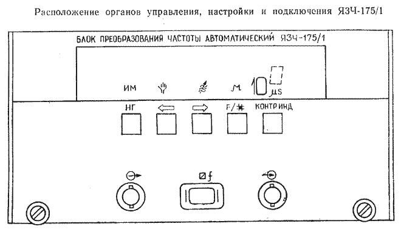

- 1. НАЗНАЧЕНИЕ
- 2. ТЕХНИЧЕСКИЕ ДАННЫЕ
- 3. ПРИНЦИП ДЕЙСТВИЯ
- 4. ОБЩИЕ УКАЗАНИЯ ПО ВВОДУ В ЭКСПЛУАТАЦИЮ
- 5. ПОРЯДОК РАБОТЫ
1. Назначение
1.1. Блок преобразования частоты автоматический ЯЗЧ-175 (ЯЗЧ-175/1) предназначен для преобразования и автоматического изменения совместно с частотомером электронно-счетным вычислительным ЧЗ-64(ЧЗ-64/1) (далее частотомер) частоты непрерывных синусоидальных (НГ) сигналов и несущей частоты импульсно-модулированных (ИМ) сигналов в диапазоне частот от 1,5 до 18 ГГц.
Блок ЯЗЧ-175 работает только с частотомером ЧЗ-64;
блок ЯЗЧ-175/1 работает только с частотомером ЧЗ-64/1.
1.2. Прибор соответствует требованиям ГОСТ 22261-82 в части метрологических характеристик, а по условиям эксплуатации предназначен для работы в условиях:
температура окружающего воздуха от минус 10 до плюс 50 °C;
относительная влажность воздуха до 98% при температуре 25 °C;
атмосферное давление 84 – 106 кПа (630 – 795 мм рт. ст.).
1.3. Прибор может применяться для настройки, испытаний и калибровки различного рода приемно-передающих трактов, систем связи и других устройств.
Прибор обеспечивает работу с каналом общего пользования (КОП) и в автоматизированной измерительной системе (АИС).
2. Технические данные
2.1. Прибор преобразовывает и автоматически измеряет совместно с частотомером частоту НГ сигналов в диапазоне от 1,5 до 18 ГГц.
2.2. Прибор преобразовывает и автоматически измеряет совместно с частотомером несущую частоту ИМ сигналов в диапазоне от 1,5 до 18 ГГц с длительностью импульсов не менее 0,1 мкс, частотой следования импульсов от 50 Гц до 2 МГц и скважностью импульсов от 2 до 1000.
2.3. Минимальная мощность входных НГ и ИМ сигналов не более 0,05 мВт. Максимальная мощность – 5 мВт (при мощности более 0,8 мВт измерение обеспечивается при подключении на вход прибора аттенюатора резисторного 2.243.948-03).
2.4. Относительная погрешность прибора при измерении частоты НГ сигналов совместно с частотомером находится в пределах значения, рассчитанного по формуле
|
|
(1) |
где δ0
– относительная погрешность по частоте
внутреннего кварцевого генератора
частотомера или внешнего опорного
генератора; fx
– значение измеряемой частоты, Гц;
τсч
– время счета частотомера, с.
2.5. Относительная погрешность прибора при измерении несущей частоты ИМ сигналов совместно с частотомером находится в пределах значения, рассчитанного по формуле
|
|
(2) |
где δ0, fx, τсч – см. формулу (1); τн – длительность радиоимпульса, с.
2.6. Входное сопротивление прибора 50 Ом – коаксиальный канал сечением 7 × 3,04 мм.
2.7. Прибор обеспечивает свои технические характеристики по истечении времени установления рабочего режима, равного двум часам.
Время готовности прибора без гарантированной погрешности измерения при работе от внутреннего кварцевого генератора частотомера или при работе с внешним опорным источником частоты не более одного часа.
2.8. Прибор совместно с частотомером обеспечивает возможность управления режимами работы через канал общего пользования (КОП).
2.9. Прибор допускает непрерывную работу в течение 16 часов при сохранении своих технических характеристик.
2.10. Питание прибора осуществляется от блока питания частотомера.
2.11. Нормальные условия эксплуатации:
температура окружающего воздуха, °C 20 ± 5;
относительная влажность окружающего воздуха, % 30 – 80;
атмосферное давление, кПа (мм рт. ст.) 84 – 106 (630 – 795).
2.12. Рабочие условия эксплуатации:
температура окружающего воздуха от минус 10 до плюс 50 °C;
относительная влажность окружающего воздуха 98% при температуре 25 °C;
атмосферное давление 84 – 106 кПа (630 – 795 мм рт. ст.).
2.13. Предельные условия транспортирования:
температура окружающего воздуха от минус 60 до плюс 65 °C;
относительная влажность окружающего воздуха 98%.
После пребывания в предельных условиях время выдержки прибора в нормальных условиях не менее двух часов.
2.14. Наработка на отказ прибора (T0) не менее 10 000 ч.
2.15. Гамма-процентный ресурс 10 000 ч при γ = 90%.
2.16. Гамма-процентный срок службы не менее 15 лет при γ = 90% и коэффициенте использования не более 0,2.
2.17. Гамма-процентный срок сохраняемости не менее 10 лет для отапливаемых или неотапливаемых хранилищ при γ = 90%.
2.18. Габаритные размеры прибора 220 × 352,5 × 108 мм, выносного «ПРЕОБРАЗОВАТЕЛЯ СВЧ 2.008.007» 164 × 95 × 60 мм.
2.19. Масса прибора не более 5 кг, масса прибора в табельной упаковке не более 20 кг, масса прибора с транспортной тарой не более 35 кг.
3. Принцип действия
3.1. Принцип действия прибора основан на применении комбинированного метода преобразования частоты входного сигнала, в котором используется метод гетеродинного дискретного преобразования частоты и метод генератора переноса частоты.
Основными узлами при использовании комбинированного метода преобразования частоты являются смеситель СВЧ и гетеродин с электронной перестройкой частоты.
Выбор рабочего диапазона гетеродина определяется с одной стороны диапазоном входных сигналов, а с другой – наибольшим номером гармоники гетеродина, при которой обеспечивается требуемая чувствительность по входному сигналу.
3.2. Прибор состоит из вставного блока и выносного преобразователя СВЧ.
Структурная схема прибора приведена на рис. 1.
Рис. 1. Структурная схема прибора
1 – преобразователь СВЧ 2.008.007;
2 – кабель соединительный 4.851.350-08;
3 – переход коаксиальный Э2-115/4 2.236.129 или 2.236.477;
4 – переход коаксиальный Э2-115/2 2.236.131;
5 – переход коаксиальный Э2-112/2 2.236.142;
6 – переход коаксиальный 2.236.284;
7 – переход коаксиально-волноводный Э2-108 2.236.014;
8 – переход коаксиально-волноводный 2.236.008;
9 – переход волноводный 5.433.014;
10 – переход коаксиально-волноводный 2.236.276 или 2.236.018;
11 – аттенюатор резисторный 2.243.918-03;
12 – болт установочный 8.920.459-02;
13 – гайка 8.930.366-01;
14 – ключ 8.892.013;
15 – съемник 6.894.004;
16 – болт установочный 8.920.013-01.
Сигнал неизвестной частоты поступает на вход выносного преобразователя и в смесителе СВЧ преобразуется в сигнал промежуточной частоты (ПЧ), который после предварительного усиления подводится ко входу вставного блока.
На второй вход смесителя СВЧ, представляющего собой стробоскопический преобразователь, подается для стробирования усиленный по мощности сигнал с выхода синтезатора частоты, находящегося во вставном блоке.
Однокольцевой синтезатор частоты выполнен по методу косвенного синтеза с использованием делителя с переменным коэффициентом деления в цепи обратной связи системы фазовой автоподстройки частоты и состоит из генератора управляемого, устройства ФАПЧ и делителя частоты программируемого.
Входная частота синтезатора задается с помощью кодов, поступающих по шине данных (ШД) к делителю частоты, программируемому от устройства запоминающего программируемого, и находится в диапазоне частот от 885,2 до 1056,8 МГц.
В качестве опорной частоты в устройстве ФАПЧ используется сигнал частотой 100 кГц, который образуется делением частоты 5 МГц внутреннего кварцевого генератора частотомера.
Выходная частота синтезатора, деленная в 4 раза, снимается с одного из выходов делителя частоты программируемого и поступает на коммутатор сигналов.
Усиленный сигнал поступает на детектор промежуточной частоты, где определяется, в какой из частотных полос он находится. Коды, соответствующие частотным полосам и типу сигнала, через буферные усилители выводятся на шину данных (ШД). Затем сигнал промежуточной частоты подводится к одному из входов коммутатора, который в зависимости от сигналов управления, поступающих от блока управления, подключает к селектору частотомера сигнал промежуточной частоты или сигнал от синтезатора для проведения измерений.
Частота входного СВЧ сигнала определяется по формуле
где N – номер гармоники; fсинт – частота синтезатора; fпч – измеренная промежуточная частота.
Номер гармоники, а также знак приращения промежуточной частоты определяются в приборе путем изменения промежуточной частоты и вычисляется по формуле
где fпч1 – промежуточная частота при fсинт1, МГц; fпч2 – промежуточная частота при (fсинт1 + 4), МГц.
Знак приращения промежуточной частоты определяется в зависимости от того, fпч1 больше или меньше fпч2. Если fпч1 > fпч2 – приращение частоты положительное, если fпч1 < fпч2 – приращение отрицательное.
В режиме измерения НГ сигналов при нажатии кнопки «V» частотомера ЧЗ-64 («F#» прибора ЯЗЧ-175/1) номер гармоники определяется при модуляции частоты синтезатора псевдослучайным способом, для чего используется генератор псевдослучайной последовательности. Указанный метод позволяет определить номер гармоники при частотной модуляции входного СВЧ сигнала.
Номер гармоники и знак приращения промежуточной частоты определяются при подключении входов блока преобразования к каналам А и Б частотомера синхронно с изменением логического уровня последовательности.
Псевдослучайная последовательность запускается дважды. Один раз – для измерения частоты синтезатора, второй – для измерения соответствующего изменения соответствующего изменения промежуточной частоты.
В каждом случае частотное изменение является разностью между числами, записанными в счетчиках каналов А и Б частотомера.
Для определения номера гармоники используется формула (5), а результат округляется до целого числа.
где n1,
n2
– число импульсов, накопленных в
счетчиках каналов А и Б соответственно
за время псевдослучайной последовательности
при измерении частоты синтезатора;
n3,
n4
– число импульсов, накопленных в
счетчиках каналов А и Б соответственно
за время псевдослучайной последовательности
при измерении изменения промежуточной
частоты.
Появление в формуле множителя 4 в знаменателе обусловлено тем, что измеряется частота синтезатора, деленная в 4 раза.
Так как по алгоритму работы прибора n1 всегда больше n2, то знак приращения промежуточной частоты будет отрицательным при n3 > n4 и положительным при n3 < n4.
Определение номера гармоники при НГ и ИМ сигналах производится в том случае, если до и после приращения частоты синтезатора на 4 МГц детектор выдает на шину данных (ШД) информацию о соответствии выбранного режима работы прибора виду сигнала и информацию о нахождении преобразованного сигнала в узкой полосе пропускания промежуточной частоты от 157 до 330 МГц.
Номер гармоники проверяется после 10 последовательных измерений для исключения ошибки.
При работе в ручном режиме устанавливаемые на табло частотомера показания, определяющие область измерения, не должны отличаться от входной частоты более, чем на ± 50 МГц.
Каждому значению величины предварительной установки соответствуют определенные значения частоты синтезатора, номера гармоники и знака приращения промежуточной частоты, занесенные в таблицу устройства запоминающего программируемого.
4. Общие указания по вводу в эксплуатацию
4.1. Распаковывание и повторное упаковывание прибора и принадлежностей
4.1.1. Распаковывание и расконсервацию изделия производить в помещении. Если есть необходимость повторного упаковывания и консервации, необходимо принять меры к сохранению упаковочного материала и тары. Снять пломбы с транспортного ящика и освободить крышку от стальной ленты. Открыть крышку ящика, извлечь товаросопроводительную документацию. Отвернуть битумированную бумагу. Извлечь верхние прокладки и амортизаторы.
Извлечь из ящика пакет с прибором, запасными частями и принадлежностями (ЗИП) в укладочном ящике. Освободить укладочный ящик от пленочного чехла и оберточной бумаги. Снять пломбы с укладочного ящика, извлечь из него прибор, эксплуатационную документацию и ящик с ЗИП. Проверить внешний вид ЗИП.
4.1.2. Упаковывание и консервацию прибора и ЗИП проводить в помещении, позволяющем соблюдать установленный технологический и требования техники безопасности. В помещение не должны проникать агрессивные газы и пыль, температура воздуха в помещении должна быть не ниже 15 °C и относительная влажность не более 70%. Допускается увеличение влажности до 80% в течение времени, когда перепад температуры в помещении не превышает 5 °C.
Прибор и ЗИП должны поступать на консервацию и упаковывание без коррозионных поражений металла и металлических покрытий, а также иметь температуру воздуха помещения, в котором упаковываются. Допускается повышение температура прибора и ЗИП над температурой воздуха не более 5 °C.
Очистить укладочный ящик (рис. 2) для прибора и ящик ЗИП от пыли и грязи.
Рис. 2. Ящик укладочный (габаритные размеры)
Проверить комплектность прибора и ЗИП на соответствие эксплуатационной документации шифру и заводскому номеру прибора и ЗИП.
Уложить прибор в укладочный ящик. ЗИП уложить в его ящик, положить уплотнительные прокладки из пенополиуретана (поролона), закрыть крышку, опломбировать, вставить в отсек укладочного ящика.
Произвести сушку силикагеля технического ШСМГ до содержания влаги не более 2%, изготовить мешочки из мальмали отбеленной или ткани упаковочной арт. 4 – 105 в количестве 1 шт. Размеры мешочка 80 × 100 мм. В мешочек насыпать силикагель массой 25 г. Мешочек перевязать тесемкой, обернуть оберточной бумагой Б70 размером 250 × 250 мм. Мешочек положить в отсек укладочного ящика.
Эксплуатационную документацию уложить в чехлы с размерами 250 × 250 мм, изготовленные из пленки полиэтиленовой МС 1 сорт толщиной не менее 0,08 мм. Заварить последние швы чехлов, откачать из них воздух до облегания документации пленкой, заварить место прокола. Уложить пакеты в отсек укладочного ящика.
Индикатор влажности положить на ящик с ЗИП.
Закрыть крышку укладочного ящика и запломбировать его с двух противоположных сторон по диагонали.
После этого
обернуть укладочный ящик бумагой
оберточной и поместить в чехол размерами
900 × 1000 мм, изготовленный из
полиэтиленовой пленки толщиной 0,2 мм.
Под чехол положить со сведениями: шифр
прибора, заводской номер, дата консервации.
Выпустить из чехла воздух до облегания
пакета чехлом. Открытый край чехла
завернуть
2 – 3 раза и заклеить
лентой ПЭ с липким слоем 0,100 × 60 Н
первый сорт. Полученный пакет обернуть
бумагой, перевязать шпагатом, приклеить
этикетку со сведениями: шифр прибора,
заводской номер, дата консервации.
Подготовить транспортный ящик с
внутренними размерами не менее: длинна
– 500 мм, ширина – 490 мм, высота –
255 мм. Ящик внутри выстлать двумя
слоями бумаги упаковочной битумированной
БУ-Б. На дно ящика положить плотный слой
амортизирующего материала (гофрированнный
картон, обрезки парафинированной бумаги,
древесная стружка и т. п.) общей
толщиной 30 – 40 мм. В ящик вложить
пакет с прибором (рис. 3).
Рис. 3. Схема упаковки
1. Укладочный ящик с прибором и ЗИП.
2. Упаковочная битумированная бумага.
3. Оберточная бумага.
4. Подушки (гофрированный картон).
5. Пломба.
6. Упаковочной транспортный ящик.
Равномерный зазор (30 – 40 мм) между пакетом с прибором и стенками, пакетом и крышкой ящика заполнить до уплотнения амортизирующим материалом. Сверху положить битумированную бумагу.
Закрыть крышку ящика. Прибить ее гвоздями шагом 80 – 100 мм, при этом гвозди не должны выступать из планок.
Ящик по торцам обтянуть стальной лентой ПН-0,4 × 20 и прибить ее гвоздями шагом 80 – 100 мм. Вместо ленты допускается применение стальной проволоки диаметром от 1,5 до 2,5 мм, которую необходимо обкручивать вокруг гвоздей перед окончательной их забивкой. Свободные концы проволоки свить и закрепить. Ящик опломбировать с двух противоположных сторон.
4.1.3. На транспортный ящик нанести предупредительные надписи «ОСТОРОЖНО, ХРУПКОЕ!», «ВЕРХ, НЕ КАНТОВАТЬ», «БОИТСЯ СЫРОСТИ», «СОБЛЮДЕНИЕ ИНТЕРВАЛА ТЕМПЕРАТУР» или манипуляционные знаки, а также другие надписи согласно рис. 4. Надписи и знаки маркировать эмалью НЦ-216, черная, У2 или любой другой краской, позволяющей наносить маркировку на фанеру.
При маркировке ящика рекомендуется руководствоваться ГОСТ 14192-77.
Рис. 4. Схема нанесения маркировки на транспортном ящике
1. Манипуляционные знаки (предупредительные надписи).
2. Количество мест в партии, порядковый номер партии.
3. Наименование грузополучателя и пункта назначения.
4. Наименование пункта перегрузки.
5.* Объем грузового места.
6. Габаритные размеры грузового места.
7. Масса брутто.
8. Масса нетто.
9. Наименование пункта отправителя.
10. Наименование грузоотправителя.
11. Дата консервации (месяц, год); 2; 5 лет;
где 2 – условия хранения; 5 лет – срок защиты без переконсервации.
12. Заводской номер изделия и дата.
13. Шифр изделия.
* Для грузов, предназначенных для экспорта.
ПРИМЕЧАНИЕ
Изготовитель оставляет за собой право использовать для упаковки прибора упаковочные и транспортные (тарные) ящики любой конструкции, принятой на предприятии.
4.2. Порядок установки
4.2.1. После того, как прибор распакован и извлечен из табельной упаковки, необходимо его осмотреть и убедиться в сохранности пломб на задней панели прибора, в отсутствии механических повреждений органов управления и влагозащитных покрытий.
4.2.2. Необходимо убедиться в наличии полного комплекта прибора согласно таблице 1.
4.2.3. Вставьте прибор в окно частотомера и закрепите его вращением винтов до упора.
4.2.4. Подключите
к расположенным на передней панели
прибора разъемам
«»,
«»,
«»
соответствующие разъемы «ПРЕОБРАЗОВАТЕЛЯ
СВЧ 2.008.007».
4.3. Подготовка к работе
4.3.1. До начала работы с прибором изучите настоящее техническое описание и инструкцию по эксплуатации, электрические схемы и конструкцию прибора, назначение органов управления и разъемов.
4.3.2. Работа прибора должна происходить в условиях, которые не выходят за пределы рабочих условий эксплуатации. Питающая сеть не должна иметь резких скачков напряжения, рядом с рабочим местом не должно быть источников сильных магнитных и электрических полей.
4.3.3. До начала эксплуатации прибора, а также периодически во время эксплуатации, необходимо проверять соответствие прибора следующим требованиям:
отсутствие механических повреждений, влияющих на работоспособность прибора;
наличие и прочность крепления органов управления, четкость фиксации их положения;
чистота соединительных разъемов;
исправность соединительных кабелей, переходов и т. д.;
отсутствие дефектов лакокрасочных покрытий и четкость маркировок.
ВНИМАНИЕ!
Во избежание выхода прибора из строя:
1) Не подавайте на разъем «» «ПРЕОБРАЗОВАТЕЛЯ СВЧ 2.008.007» сигнал величиной более 10 мВт;
2) Перед подключением соединительного кабеля от источника измеряемого сигнала к разъему «» «ПРЕОБРАЗОВАТЕЛЯ СВЧ 2.008.007» обязательно коснитесь рукой и разъемом кабеля заземленного устройства (кабель необходимо разрядить от возможного заряда статического электричества);
3) Устанавливайте прибор только в выключенный частотомер, включение производите только после полной установки прибора в нем.
5. Порядок работы
5.1. Расположение органов управления, настройки и подключения ЯЗЧ-175
5.1.1. На передней панели прибора расположены показанные на рис. 5 следующие органы управления, настройки и подключения:
разъемы «», «», «», предназначенные для подключения «ПРЕОБРАЗОВАТЕЛЯ СВЧ 2.008.007» при измерениях;
кнопка «НГ» (с подсветкой), предназначенная для задания режима измерения частоты НГ или несущей ИМ сигналов. Свечение индикатора внутри кнопки «НГ» сигнализирует о подготовке прибора к изменению частоты НГ сигнала;
индикатор «ИМ», сигнализирующий о заданном режиме измерения несущей частоты ИМ сигналов. Прибор переходит в указанный режим после нажатия кнопки «НГ»;
кнопка «» (с подсветкой), предназначенная для задания автоматического или ручного режима работы прибора. Свечение индикатора внутри этой кнопки сигнализирует о подготовке прибора к автоматическим изменениям частоты;
индикатор «», сигнализирующий о задании ручного режима работы прибора. Прибор переходит в указанный режим после нажатия кнопки «»;
кнопка «», предназначенная для ускорения предварительной установки частоты на табло частотомера ЧЗ-64 при подготовке прибора к измерениям в ручном режиме. Повторное нажатие кнопки «
 »
прекращает предварительную установку;
»
прекращает предварительную установку;кнопка СДВИГ, предназначенная для пошагового изменения значения предварительно устанавливаемой на табло частотомера частоты при подготовке прибора к измерениям в ручном режиме;
индикатор «», сигнализирующий об окончании настройки прибора при достаточной входной мощности и соответствии вида сигнала установленному режиму измерения НГ сигнала или несущей частоты ИМ сигнала;
цифровой индикатор установленного времени счета, который высвечивает показатель степени к гравированной цифре «10 мS»;
кнопка «КОНТР ИНД», предназначенная для контроля работоспособности сегментов цифрового индикатора и светодиодных индикаторов;
индикатор «», сигнализирующий об установлении режима работы прибора, позволяющего автоматически измерить НГ сигналы с частотной модуляцией.
Рис. 5. Расположение органов управления, настройки и подключения ЯЗЧ-175
5.1.2. Разъем «» выносного «ПРЕОБРАЗОВАТЕЛЯ СВЧ 2.008.007» предназначен для подведения измеряемого сигнала.
5.2. Подготовка к проведению измерений ЯЗЧ-175
5.2.1. Подготовьте к работе частотомер ЧЗ-64 в соответствии с указаниями его технического описания и инструкции по эксплуатации.
5.2.2. Включите тумблер «СЕТЬ 1» частотомера.
5.2.3. Для проведения измерений при работе с внутренним кварцевым генератором, прогрейте его, исходя из требуемой точности измерений. Прогрев кварцевого генератора может производиться без включения тумблера «СЕТЬ 1», так как питание кварцевого генератора осуществляется с момента подключения шнура к сети. После времени установления рабочего режима прибора, составляющего 1 ч, приступайте к измерениям.
5.2.4. Произведите проверку правильности установки режима работы прибора при включении.
При этом:
время счета «102 μS»;
задан автоматический режим измерения НГ сигналов (индикаторы «НГ» и «» включены);
происходит перестройка прибора в режиме поиска входной частоты (индикатор «» выключен).
ПРИМЕЧАНИЯ: 1. При включении частотомера осуществляется режим самокалибровки его, о чем свидетельствует мигание и свечение индикатора «000», расположенного на передней панели частотомера в течение, примерно, 30 с.
2. В случае, когда «ПРЕОБРАЗОВАТЕЛЬ СВЧ 2.008.007» не подключен к разъему «» прибора, будет наблюдаться мигание индикатора времени счета при первом включении.
5.2.5. Произведите проверку работоспособности прибора. Для этого при включенном индикаторе «НГ» нажмите кнопку «», при этом на передней панели прибора погаснет индикатор «», и включится индикатор «». Проверьте индексацию 1,5 – 18 ГГц на табло частотомера в течение 2 с, после чего на табло установится 1,5 ГГц.
Затем нажмите кнопку «V» на передней панели частотомера и проконтролируйте последовательную индексацию частот 885,2 МГц и 1,0568 ГГц при выбранном времени счета. При нажатии кнопок «2» – «6» во время данной проверки частотомер производит по пять последовательных измерений вышеуказанных частот.
5.3. Проведение измерений ЯЗЧ-175
5.3.1. Выполните требования п. 5.2.1 – 5.2.4.
5.3.2. Соедините кабелем соединительным 4.851.350-08 (маркировка «141»), входящим в ЗИП прибора, источник измеряемого сигнала со входным разъемом «» «ПРЕОБРАЗОВАТЕЛЯ СВЧ 2.008.007» из ЗИП именно данного прибора.
5.3.3. Для задания автоматического режима измерения НГ сигналов нажатием кнопок «НГ» и «» зажгите индикаторы подсветки указанных кнопок. После окончания процесса настройки прибора, о чем свидетельствует зажигание индикатора «», на табло частотомера индицируется результат измерения.
ПРИМЕЧАНИЕ. Если частотная модуляция входного НГ сигнала не позволяет произвести правильные измерения, дополнительно нажмите кнопку «V» на передней панели частотомера. При этом загорается индикатор «μ» на передней панели прибора и на табло частотомера индицируется результат измерения.
5.3.4. Для задания автоматического режима измерения несущей частоты ИМ сигналов нажатием кнопок «НГ» и «» зажгите индикаторы «НГ» и «» на передней панели прибора. После окончания процесса настройки прибора, о чем свидетельствует зажигание индикатора «», на табло частотомера индицируется результат измерения.
ПРИМЕЧАНИЯ: 1. При необходимости калибровки частотомера нажмите кнопки «» и «0» на его передней панели после выполнения режима самоконтроля частотомера.
2. Если после зажигания индикатора «» частотомер не осуществляет счет (светится индикатор «»), нажмите кнопку «X» на передней панели частотомера или дважды кнопку «НГ» прибора.
5.3.5. Прибор допускает измерение частоты НГ сигналов и несущей частоты ИМ сигналов в ручном режиме измерения, если значение входной частоты известно с точностью до 50 МГц.
5.3.6. Для задания ручного режима измерения НГ сигналов нажатием кнопок «НГ» и «» зажгите индикаторы «НГ» и «» на передней панели прибора. При этом на табло частотомера в течение 2 с индуцируется 1,5 –18 ГГц после чего устанавливается 1,5 ГГц. Выполните с помощью кнопок «» или СДВИГ, находящиеся на передней панели прибора, установку на табло частотомера значения входной частоты с точностью до 50 МГц. После нажатия кнопки «X», расположенной на передней панели частотомера, при правильной предварительной установке значения входной частоты зажигается индикатор «» и на табло частотомера индицируется результат измерения.
5.3.7. Для задания ручного режима измерения несущей частоты ИМ сигналов нажатием кнопок «НГ» и «» зажгите индикаторы «ИМ» и «», расположенные на передней панели прибора. Выполните предварительную установку согласно п. 5.3.6. После нажатия кнопки «X», расположенной на передней панели частотомера, при правильной предварительной установке значения входной частоты зажигается индикатор «» и на табло частотомера индицируется результат измерения.
5.3.8. Для измерения времени счета прибора наборным полем частотомера установите выбранное время счета, которое может быть от 102 до 106 мкс. При этом набирается только степенной показатель времени счета в микросекундах.
5.3.9. Прибор допускает измерение несущей частоты одиночного радиоимпульса в ручном режиме.
Для задания режима измерения нажатием кнопок «НГ» и «» зажгите индикаторы «ИМ» и «», расположенные на передней панели прибора. Выполните предварительную установку согласно п. 5.3.6. Последовательным нажатием кнопок «X» и «V», находящихся на передней панели частотомера, подготовьте прибор к измерениям при времени счета, определяемой длительностью радиоимпульса. При этом индикатор «» не зажигается, а показатель степени времени счета гаснет. После прохождения одиночного радиоимпульса на табло частотомера индицируется результат измерения.
5.3.10. Для осуществления управления прибором из системы КОП выполните следующие операции:
1) адресуйте частотомер ЧЗ-64 (передайте МАП /\ УП);
2) передайте коды управления в соответствии с техническим описанием и инструкцией по эксплуатации ДЛИ2.721.006 ТО на частотомер ЧЗ-64 и для задания автоматического измерения прибором частоты НГ сигналов код 4Е(Н)41(Н), символы NA, а для автоматического измерения несущей частоты ИМ сигналов – код 49(Н)41(Н), символы 1А;
3) Передайте код ограничителя Ø А.
5.3.11. После окончания измерений необходимо тумблером «СЕТЬ 1» выключить частотомер ЧЗ-64 и вилку шнура питания отключить от сети.
5.4. Расположение органов управления, настройки и подключения ЯЗЧ-175/1

Рис. 6. Расположение органов управления, настройки и подключения ЯЗЧ-175/1
5.4.1. На передней панели прибора расположены показанные на рис. 6 следующие органы управления, настройки и подключения:
разъемы «», «», «», предназначенные для подключения «ПРЕОБРАЗОВАТЕЛЯ СВЧ 2.008.007» при измерениях;
кнопка «НГ» (с подсветкой), предназначенная для задания режима измерения частоты НГ или несущей ИМ сигналов. Свечение индикатора внутри кнопки «НГ» сигнализирует о подготовке прибора к изменению частоты НГ сигнала;
индикатор «ИМ», сигнализирующий о заданном режиме измерения несущей частоты ИМ сигналов. Прибор переходит в указанный режим после нажатия кнопки «НГ»;
кнопка «», предназначенная для перевода прибора в заданной отметке и предустановки метки частоты при движении к нижней границе диапазона;
кнопка «», предназначенная для перевода прибора в заданной отметке и предустановки метки частоты при движении к верхней границе диапазона;
индикатор «», сигнализирующий о задании ручного режима – режима измерения частоты в заданной отметке. Прибор переходит в указанный режим после нажатия кнопки «» или кнопки «»;
кнопка «F/#», предназначенная совместно с кнопкой «НГ» для задания режима автоматического измерения частоты НГ сигнала с частотной модуляцией и для перехода к измерениям в ручном режиме;
индикатор «», сигнализирующий об окончании настройки прибора при достаточной входной мощности и соответствии вида сигнала установленному режиму измерения НГ сигнала или несущей частоты ИМ сигнала;
цифровой индикатор установленного времени счета, который высвечивает показатель степени к гравированной цифре «10 μS»;
кнопка «КОНТР ИНД», предназначенная для контроля работоспособности сегментов цифрового индикатора и светодиодных индикаторов;
индикатор «», сигнализирующий об установлении режима работы прибора, позволяющего автоматически измерить НГ сигналы с частотной модуляцией.
5.4.2. Разъем «» выносного «ПРЕОБРАЗОВАТЕЛЯ СВЧ 2.008.007» предназначен для подведения измеряемого сигнала.
5.5. Подготовка к проведению измерений ЯЗЧ-175/1
5.5.1. Подготовьте к работе частотомер ЧЗ-64/1 в соответствии с указаниями его технического описания и инструкции по эксплуатации.
5.5.2. Включите тумблер «СЕТЬ 1» частотомера.
5.5.3. Для проведения измерений при работе с внутренним кварцевым генератором, прогрейте его, исходя из требуемой точности измерений. Прогрев кварцевого генератора может производиться без включения тумблера «СЕТЬ 1», так как питание кварцевого генератора осуществляется с момента подключения шнура к сети. После времени установления рабочего режима прибора, составляющего 1 ч, приступайте к измерениям.
5.5.4. Произведите проверку правильности установки режима работы прибора при включении.
При этом:
время счета «102 μS»;
осуществляется измерение частотомером опорной частоты 100 МГц;
индикаторы на передней панели прибора, за исключением цифрового индикатора показателя степени, погашены.
ПРИМЕЧАНИЯ: 1. При включении частотомера осуществляется режим самокалибровки его, о чем свидетельствует мигание и свечение индикатора «000», расположенного на передней панели частотомера в течение, примерно, 15 с.
2. В случае, когда «ПРЕОБРАЗОВАТЕЛЬ СВЧ 2.008.007» не подключен к разъему «» прибора, на табло частотомера высвечиваются символы .
5.5.5. Произведите проверку работоспособности прибора. Для этого нажмите последовательно кнопки «» и «1» частотомера и проконтролируйте индикацию частоты 885,2 МГц при выбранном времени счета. Затем нажмите последовательно кнопки «» и «1» частотомера и проконтролируйте индикацию частоты 1,0568 ГГц при выбранном времени счета.
5.6. Проведение измерений ЯЗЧ-175/1
5.6.1. Выполните требования пп. 5.5.1 – 5.5.4.
5.6.2. Соедините кабелем соединительным 4.851.350-08 (маркировка «141»), входящим в ЗИП прибора, источник измеряемого сигнала со входным разъемом «» «ПРЕОБРАЗОВАТЕЛЯ СВЧ 2.008.007».
5.6.3. Для задания автоматического режима измерения НГ сигналов нажатием кнопки «НГ» зажгите индикатор ее подсветки. После окончания процесса настройки прибора, о чем свидетельствует зажигание индикатора «», на табло частотомера индицируется результат измерения.
ПРИМЕЧАНИЕ. Если частотная модуляция входного НГ сигнала не позволяет произвести правильные измерения, дополнительно нажмите кнопку «F/#» на передней панели частотомера. При этом загорается индикатор «» на передней панели прибора и на табло частотомера индицируется результат измерения.
5.6.4. Для задания автоматического режима измерения несущей частоты ИМ сигналов нажатием кнопки «НГ» зажгите индикатор «ИМ» на передней панели прибора. После окончания процесса настройки прибора, о чем свидетельствует зажигание индикатора «», на табло частотомера индицируется результат измерения.
ПРИМЕЧАНИЯ: 1. При необходимости калибровки частотомера нажмите кнопки «» и «0» на его передней панели после выполнения режима самоконтроля частотомера.
2. Если после зажигания индикатора «» частотомер не осуществляет счет (светится индикатор «»), нажмите кнопку «X/ВНМ» на передней панели частотомера или дважды кнопку «НГ» прибора.
5.6.5. Прибор допускает измерение частоты НГ сигналов и несущей частоты ИМ сигналов в ручном режиме измерения, если значение входной частоты известно с точностью до 50 МГц.
5.6.6. Для задания ручного режима измерения НГ сигналов кнопкой «НГ» зажгите индикатор «НГ», а кнопками «» или «» выберите начало перестройки частоты. При первом нажатии кнопок «» или «» после выбора режима «НГ» («ИМ») на передней панели ЯЗЧ-175/1 зажигается индикатор «», а на цифровом табло ЧЗ-64/1 кратковременно (на 2 с) зажигаются символы «1,5 _ _ 18» или «18,0 _ _ 1,5», после чего остаются зажжёнными символы «1,5» или «18,0», указывающие начало перестройки в диапазоне от 1,5 до 18 ГГц или от 18 до 1,5 ГГц соответственно. При однократном нажатии кнопок «» или «» частота увеличивается или уменьшается с дискретностью 0,1 ГГц, а при удержании любой из этих кнопок в нажатом состоянии происходит автоматическое увеличение или уменьшение частоты с той же дискретностью в пределах диапазона. Попытка произвести перестройку выше верхнего или ниже нижнего пределов вызовет мигание «18,0» или «1,5» соответственно.
Выполните с помощью кнопок «» или «» установку на табло частотомера значения входной частоты с точностью до 50 МГц, а затем нажмите кнопку «F/#» на передней панели прибора. При правильной предварительной установке значения входной частоты зажигается индикатор «» и на табло частотомера индицируется результат измерения.
5.6.7. Для задания ручного режима измерения несущей частоты ИМ сигналов нажатием кнопок «НГ» и «» или «» зажгите индикаторы «ИМ» и «», расположенные на передней панели прибора. Выполните предварительную установку согласно п. 5.6.6. После нажатия кнопки «F/#» при правильной предварительной установке значения входной частоты зажигается индикатор «» и на табло частотомера индицируется результат измерения.
5.6.8. Для измерения времени счета прибора наборным полем частотомера установите выбранное время счета, которое может быть от 102 до 106 мкс. При этом набирается только степенной показатель времени счета в микросекундах.
5.6.9. Прибор допускает измерение несущей частоты одиночного радиоимпульса в ручном режиме при подборе входной мощности.
Для задания режима измерения нажатием кнопок «НГ» и «» или «» зажгите индикаторы «ИМ» и «», расположенные на передней панели прибора. Выполните предварительную установку согласно п. 5.6.6.
Последовательным нажатием кнопки «F/#», а затем кнопки МИНИМ., находящиеся на передней панели частотомера, подготовьте прибор к измерениям при времени счета, определяемой длительностью радиоимпульса. При этом индикатор «» не зажигается, а показатель степени времени счета индицирует «|_|». После прохождения одиночного радиоимпульса на табло частотомера индицируется результат измерения.
5.6.10. Для осуществления управления прибором из системы КОП выполните следующие операции:
1) адресуйте частотомер ЧЗ-64/1 (передайте МАП /\ УП);
2) передайте коды управления в соответствии с техническим описанием и инструкцией по эксплуатации ДЛИ2.721.006-02 ТО на частотомер ЧЗ-64/1 и таблицей, приведенной ниже.
Таблица 1
|
Режим работы |
Код режима в символах по ГОСТ 27463-87 |
Примечание |
|
Автоматическое измерение частоты НГ сигнала |
FØ |
|
|
Автоматическое измерение частоты НГ сигнала с частотной модуляцией |
F1 |
|
|
Автоматическое измерение несущей частоты ИМ сигнала |
F2 |
|
|
Измерение частоты НГ сигнала в заданной отметке ручного режима |
F3 |_| a |
a
– число |
|
Измерение несущей частоты ИМ сигнала в заданной отметке ручного режима |
F4 |_| a |
то же |
|
Измерение частоты 885,2 МГц при проверке работоспособности прибора |
C4 |
|
|
Измерение частоты 1,0568 ГГц при проверке работоспособности прибора |
C5 |
|
3) Передайте код ограничителя Ø А.
5.6.11. После окончания измерений необходимо тумблером «СЕТЬ 1» выключить частотомер ЧЗ-64/1 и вилку шнура питания отключить от сети